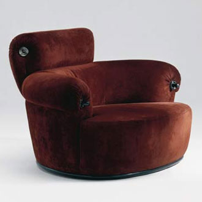

Toro armchair by Luigi Caccia Dominioni
This armchair has three main components: the seat, the backrest and the headrest. The seat is realized with NUBS and BEZIER and is curved to the front to give the appearance of a pillow; this particular is realized passing to BEZIER three nubs instead of two, so the second nubs (the contained one) is larger then the others.
var points11 = [[0,0,0],[1.5,0,0],[1.5,0,0],[2,3.5,0],[5,4,0],[8,3.5,0],[8.5,0,0],[8.5,0,0],[10,0,0],[10,0,0],[10,-1,0],[8.5,-4,0],[5,-5.5,0],[1.5,-4,0],[0,-1,0],[0,0,0]] var knots11 = generateKnot(points11) var nubs11 = NUBS(S0)(2)(knots11)(points11); var curve11 = MAP(nubs11)(domain); var points12 = [[0,0,3],[1.5,0,3],[1.5,0,3],[2,3.5,3],[5,4,3],[8,3.5,3],[8.5,0,3],[8.5,0,3],[10,0,3],[10,0,3],[10,-1,3],[8.5,-4,3],[5,-5.5,3],[1.5,-4,3],[0,-1,3],[0,0,3]] var knots12 = generateKnot(points12) var nubs12 = NUBS(S0)(2)(knots12)(points12); var curve12 = MAP(nubs12)(domain); var points13 = [[0,0,1.5],[1.5,0,1.5],[1.5,0,1.5],[2,3.5,1,5],[5,4,1.5],[8,3.5,1.5],[8.5,0,1.5],[8.5,0,1.5],[10,0,1.5],[10,0,1.5],[10,-1,1.5],[9,-4.5,1.5],[5,-6,1.5],[1,-4.5,1.5],[0,-1,1.5],[0,0,1.5]] var knots13 = generateKnot(points13) var nubs13 = NUBS(S0)(2)(knots13)(points13); var curve13 = MAP(nubs13)(domain); var sur12 = BEZIER(S1)([nubs11,nubs13,nubs12]) var surface12 = MAP(sur12)(dom2d) var sur11 = BEZIER(S1)([nubs11,[5,0,0]]) var surface11 = MAP(sur11)(dom2d) var sur22 = BEZIER(S1)([nubs12,[5,0,3]]) var surface22 = MAP(sur22)(dom2d) var pillowAnt = STRUCT([surface11,surface12,surface22])
The second main component is the backrest, which was the harder to realize because of the complexity of its shape. It's realized with NUBS, BEZIER and ROTATIONAL_SURFACE plasm functions. In particular ROTATIONAL, mapped with a [0,PI] domain, draws the curve and NUBS draws the closures for the rotational surface.
var points1 = [[3.5,0,2],[5,0,2],[5,0,2],[5,0,5.5],[5,0,5.5],[6,0,5.5],[5,0,7],[3.5,0,6],[3.5,0,2]] var knots1 = generateKnot(points1) var nubs1 = NUBS(S0)(2)(knots1)(points1); var curve1 = MAP(nubs1)(domain); var sur1 = BEZIER(S1)([nubs1,[4.2,0,5.5]]) var surface1 = MAP(sur1)(dom2d) var mapping = ROTATIONAL_SURFACE(nubs1) var schien= MAP(mapping)(domainRot)
Finally the headrest, realized again with NUBS and BEZIER plasm functions. It's placed at the top of the backrest and the shape of the curve follows its concavity.
var pointc1 = [[0,0,0],[0,1,1.5],[0,0,3],[0,-1,2.5],[0,0,1.5],[0,-0.2,0],[0,0,0]] var knotsc1 = generateKnot(pointc1) var nubsc1 = NUBS(S0)(2)(knotsc1)(pointc1); var curvec1 = MAP(nubsc1)(domain); var pointc2 = [[2,0,0],[2,1,1.5],[2,0,3],[2,-1,2.5],[2,0,1.5],[2,-0.2,0],[2,0,0]] var knotsc2 = generateKnot(pointc2) var nubsc2 = NUBS(S0)(2)(knotsc2)(pointc2); var curvec2 = MAP(nubsc2)(domain); var surc12 = BEZIER(S1)([nubsc1,nubsc2]) var surfacec12 = MAP(surc12)(dom2d) var surc1 = BEZIER(S1)([nubsc1,[0,0,1.5]]) var surfacec1 = MAP(surc1)(dom2d) var surc2 = BEZIER(S1)([nubsc2,[2,0,1.5]]) var surfacec2 = MAP(surc2)(dom2d) var poggiaTesta = S([0,2])([2,1.5])(STRUCT([surfacec1,surfacec12,surfacec2]))
Toro armchair original model

Result obtained in Javascript